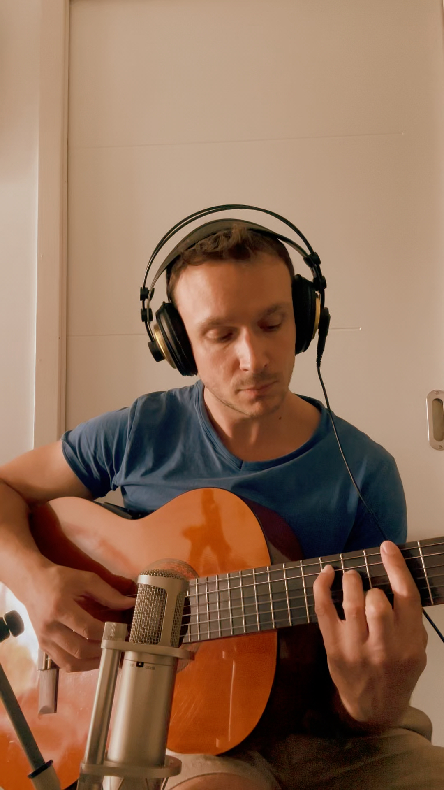

Official website of Luscinia, a French lo-fi beatmaker and instrumental producer creating warm, relaxing music with acoustic instruments. Listen to Luscinia on Spotify, YouTube and all streaming platforms.
Listen to LusciniaLuscinia is the Latin name for the nightingale, a bird famous for its beautiful songs throughout the day: from quiet mornings and moments of focus to slow evenings and even the silence of the night. The Luscinia lo-fi project is inspired by this idea: creating music that can accompany you day and night, during work, study, relaxation and everyday moments.

For collaborations:
Luscinia.lofi@gmail.com